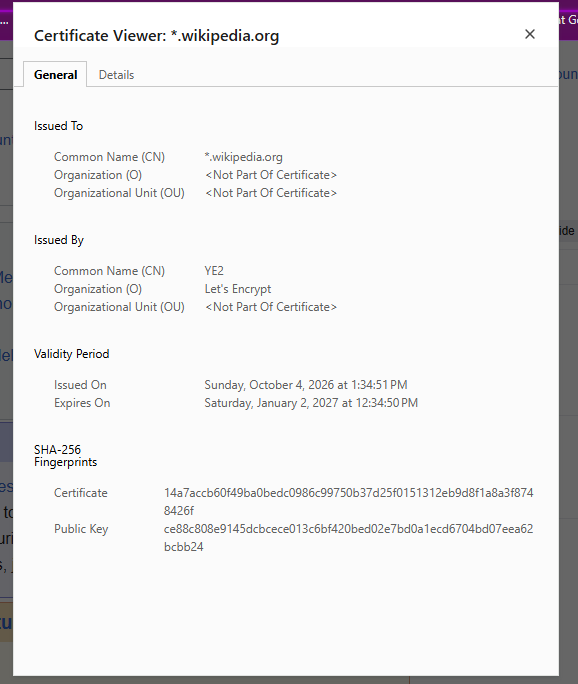

I ran an Internet exposure test and got the result that "THE EQUIPMENT AT THE TARGET IP ADDRESS DID NOT RESPOND TO OUR UPnP PROBES!". That means my router ignored all UPnP probes sent from the internet, and hackers cannot access, exploit, or install malware on my computer.
Wikipedia: Comparison of antivirus software: Wikipedia does not have an article with this exact name.
I scanned my computer with Windows Security – over 20,000 files were scanned; 0 threats found. I am confident using Windows Security going forward and don't want to download any AV that could interfere with it. I previously had issues with Avira and Norton when I couldn't uninstall them completely from the device.
I went to EICAR test file and, after reading the provided information: “EICAR cannot be held responsible when these files or your AV scanner in combination with these files cause any damage to your computer. YOU DOWNLOAD THESE FILES AT YOUR OWN RISK. Download these files only if you are sufficiently secure in the usage of your AV scanner. EICAR cannot and will not provide any help to remove these files from your computer. Please contact the manufacturer/vendor of your AV scanner to seek such help.” I have decided not to perform this test. I was not sure that I would be able to delete downloaded files or that my perfectly fine working computer will not be harmed.
